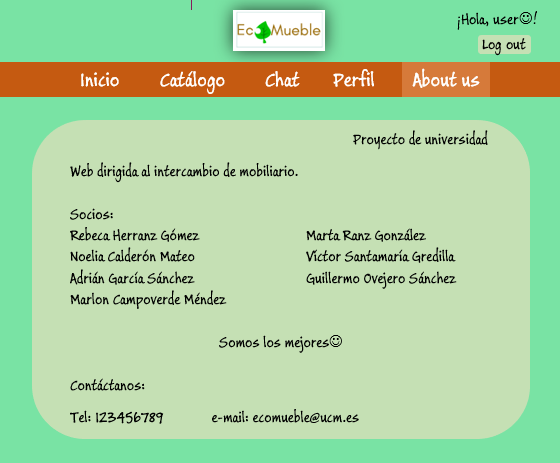
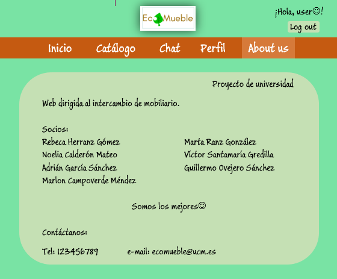

Vistas de la página de inicio dependiendo del usuario que acceda (sin registrar, registrado o administrador). Permite registrarse, iniciar o cerrar sesión según el caso. Tanto en la página de inicio como en todas las demás, podemos ver la barra de menú que nos permite navegar entre las distintas páginas de nuestra web, los últimos artículos subidos ("novedades") y algunos usuarios registrados. Además el logo nos permite acceder al inicio desde cualquiera de las páginas de la web. Desde el usuario Administrador podemos acceder al botón "Editar" que nos permite gestionar el contenido de la web. El usuario No Registrado no podrá acceder a los detalles de los artículos ni a los perfiles de los usuarios.


Página del catálogo. Permite ver los últimos artículos subidos a la web. Además a los usuarios logeados y al administrador les permitirá pinchar sobre cada artículo y acceder a dicha página, pudiendo ver más detalles del mismo, como una breve descripción y qué usuario lo ha subido.

Detalles del artículo seleccionado. Sólo visible para usuarios registrados y administrador.
Se accede pulsando sobre cualquier artículo para obtener más información. Podemos ver más imágenes
del producto, qué usuario lo ha subido y la valoración de ese usuario,
dónde se encuentra el producto y su precio.
También podemos abrir una conversación con ese usuario en el chat.


Página del chat. A los usuarios no registrados se les permitirá ver esta página pero se les solicitará que inicien sesión o se registren para ver el contenido del chat. Los usuarios logeados (registrados y administrador) podrán ver las conversaciones activas en la parte derecha de la página y pulsando sobre cualquiera de ellas podrán ver su contenido y mandar mensajes.

Solo pueden ver esta pantalla los usuarios registrados y el administrador. Se muestra el intercambio de mensajes entre usuarios.


Perfil de usuario. Los usuarios no registrados no podrán ver la información de esta página, se mostrará un mensaje de aviso para que se registren o inicien sesión. Los usuarios registrados podrán ver sus datos, su foto y sus artículos publicados. El administrador, además, tendrá un botón para editar los contenidos.
 


About us, o página de miembros. Es la página con información sobre los miembros del proyecto. Es la misma para cualquier tipo de usuario.